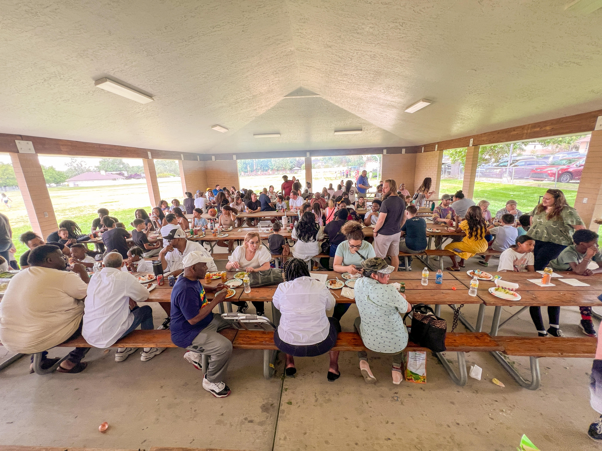
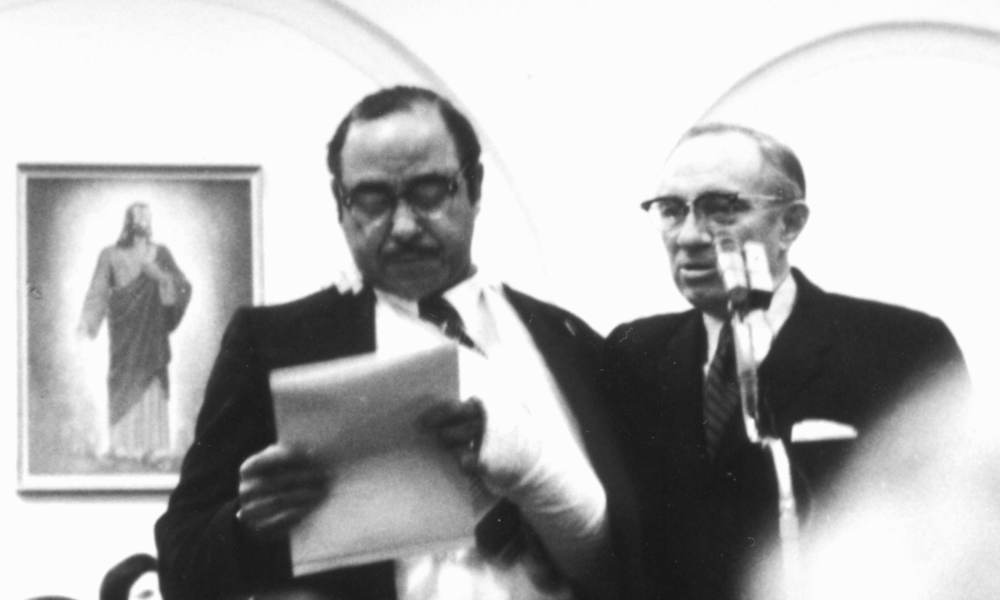

Genesis Group was established in October 1971 by the First Presidency of The
Church of Jesus Christ of Latter-day Saints as a dependent branch to serve
the needs of African-American Latter-day Saints. Following the priesthood
revelation on June 9, 1978, Genesis Group continued to host meetings on the
first Sunday of every month, and other activities, to support and edify all
Latter-day Saints, their families and friends, and individuals interested in The
Church of Jesus Christ of Latter-day Saints.
Today, the current purpose was provided by the late President M. Russell
Ballard who said: “Today the Genesis Group is organized in harmony with the
Church’s general handbook as a multi-stake activity group in the Utah Area.
Its main purpose is to bring Church members and others together as fellow
citizens with the Saints and to encourage and support black latter-day Saints,
their families, and their friends to build faith in Jesus Christ, strengthen their
membership in His restored Church, and foster unity.”
Genesis Group provides assistance to the Utah Area Presidency, mission presidents, stake presidents,
bishops, and ward organizations. The group is organized under the direction of the Quorum of the
Twelve Apostles through the Utah Area Presidency under the leadership of Elder Kevin W. Pearson
of the First Quorum of the Seventy. It is overseen through assignment by Elder Hutch U. Fale and
Elder K. Bruce Boucher, both members of the Twelfth Quorum of the Seventy.
Today the Genesis Group is led by President Ronell Hugh, First Counselor Thom Reed,
Second Counselor Will Kennedy, and Executive Secretary Errol Balfour.

Genesis Group provides activities that strengthen and build Black Latter-day
Saints through the gospel of Jesus Christ and its community. It’s an
opportunity for us to gather as children of God to worship, sing, and socialize
together.
We provide a:
- Monthly Devotional: Held on the first Sunday of every month in Draper, Utah.
- Annual Summer BBQ: Held annually on the first Saturday in June
- Christmas Party: Held on the first Saturday in December
As a Genesis Group community, we are always looking to provide additional
activities for us to gather to be strengthened spiritually, mentally,
emotionally, socially, and physically.

Genesis Group holds a monthly devotional on the first Sunday. Our focus with
these devotionals is to strengthen and build Black Latter-day Saints through
the gospel of Jesus Christ with music, word, and testimony.
The devotional is held from 5:30 to 7:30 p.m. at 275 East 10600 South in
Sandy, Utah. Many who attend come to enjoy the prelude music provided by
Debra Bonner Unity Gospel Choir which begins at 5:30 p.m.
Below are the devotional dates for 2025:
- January 5
- February 2
- March 2
- April 6
- May 4
- June 1
- July 6
- August 3
- September 7
- October 5
- November 2
- December 7
We invite all Black Latter-day Saints, their family and friends to join us.
Watch the devotional livestream
Visit our Facebook Group for the latest news
Facebook Page
Instagram

The Genesis Group was established in October 1971 by the
First Presidency of The Church of Jesus Christ of Latter-day Saints
as a dependent branch to serve the needs of African-American
Latter-day Saints. Following the priesthood revelation, or
Official Declaration #2, in June 1978, The Genesis Group continues
to host meetings on the first Sunday of every month, and other
activities, to support and edify all Latter-day Saints,
their families and friends, and individuals interested in the
LDS Church. The Genesis Group also provides assistance to
mission presidents, stake presidents, and bishops.
Elder Hutch Fale, a member of the Fifth Quorum of the Seventy,
currently oversees The Genesis Group.
We are not an auxiliary like the Relief Society but we are more
than a 'fireside' while less than a ward. What fireside has a
presidency set apart to a specific purpose? What fireside has
its own auxiliaries? . . . Genesis is by design not like any other
unit of the Church but there is beauty in that special calling.
There is also responsibility. We exist and serve at the pleasure
of the leadership of the Lord's Church. Our purpose is the Lord's
purpose - we help to bring souls to the Restored Gospel."
Regular activities include the annual summer picnic, usually
held the first Saturday in June, with 300+ in attendance from
all over the United States and Canada. On the first Saturday in
December is the annual Christmas potluck dinner. March brings the
Brothers Breakfast and September the Sisters Breakfast.
Other annual activities are held for Primary and the youth.